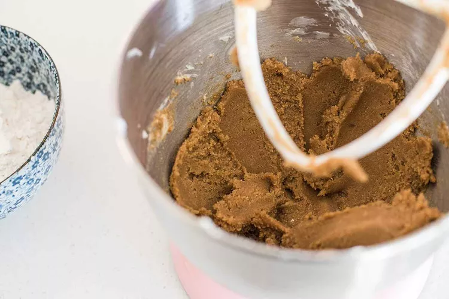
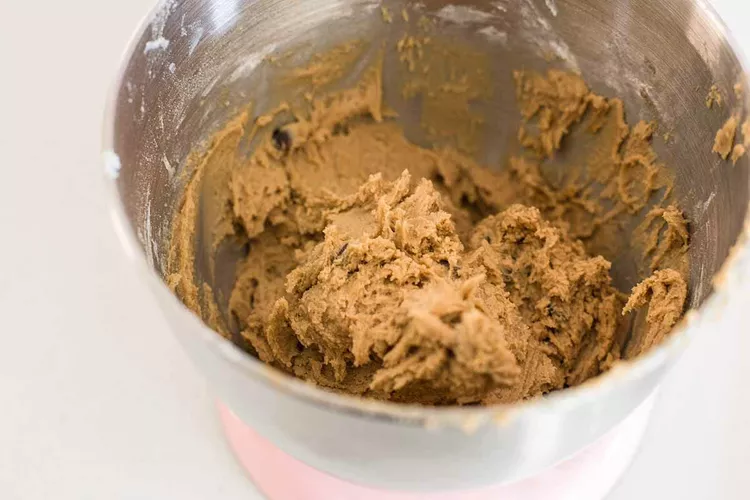
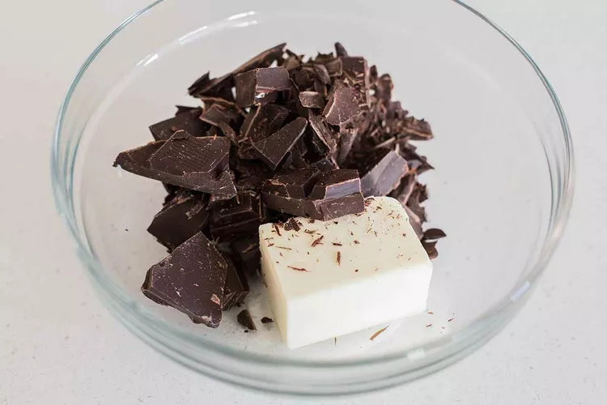
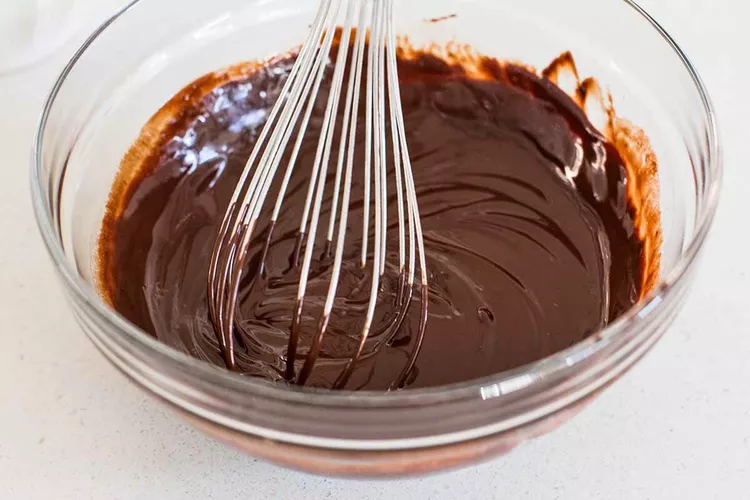
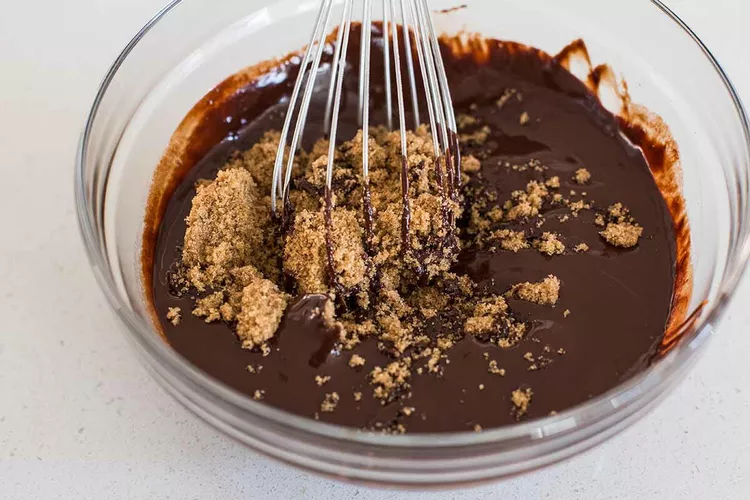
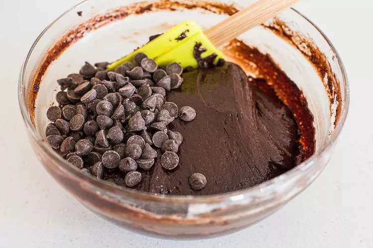
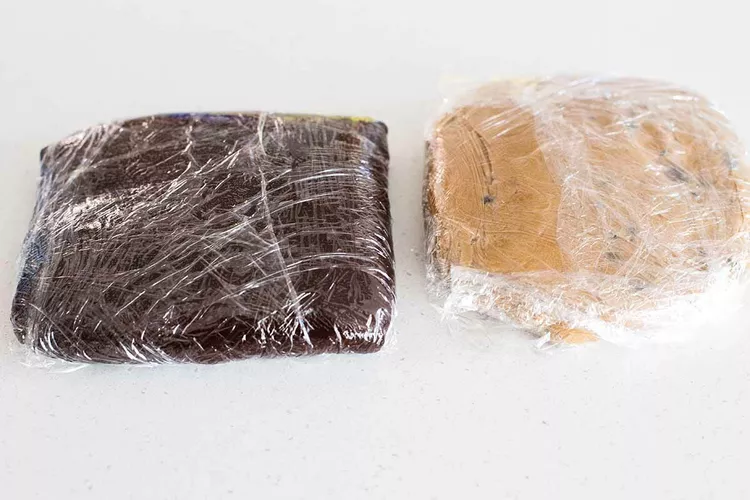
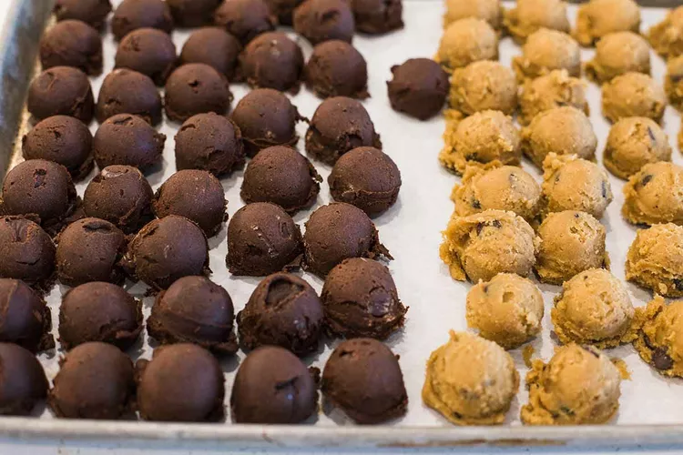

Preheat the oven to 375°F for 30 minutes with an oven rack in the center position.
Line two baking sheets with parchment paper and set to the side.
Whisk the flour, baking powder, and salt together in a bowl and set aside. In the bowl of a stand mixer, beat the butter and brown sugar together until just combined. On medium speed, beat in the eggs one at a time, scraping the bowl after each addition, followed by the vanilla extract. The dough will be soft, but that’s what we want. On low speed, beat in the flour mixture all at once, until just combined. Mix in the chocolate chips by hand, or with the mixer on low speed. Transfer the dough to a piece of plastic wrap and form into a flat rectangle (this will help the dough chill faster). Wrap the plastic wrap around the dough and refrigerate for at least 1 hour.
 In a large, microwave-safe mixing bowl melt the chocolate and butter together in 30-second intervals, stirring between each, until the chocolate is melted and the mixture is smooth. Whisk in the brown sugar, followed by the eggs and vanilla extract. Using a spatula, fold in the flour, sifted cocoa powder, baking powder, salt, and chocolate chips to form a very soft dough. Transfer the dough to a piece of plastic wrap and form into a flat rectangle (this will help the dough chill faster). Wrap the plastic wrap around the dough and refrigerate for at least 1 hour.
   nce both doughs have chilled, use a small cookie scoop to measure about 1 tablespoon of each dough. Using your palms, roll the two doughs gently together to form a ball and place on the parchment-lined baking sheet. Place all the dough balls on one of the baking sheets (it's ok to crowd them), cover with plastic wrap, and chill for at least 30 minutes while the oven preheats or up to overnight.
 Rearrange the chilled cookie dough balls between two sheet pans so they are spaced a few inches apart. (If you have more than will fit comfortably, transfer the extras to a dinner plate and place back in the fridge). Sprinkle lightly with sea salt. Bake one sheet at a time for 10 to 12 minutes. Let the cookies cool on the sheet pan for 3 minutes before transferring to a wire rack to cool completely. Repeat with the remaining dough. Store the cookies in an airtight container on the counter. They will keep for about 3 to 4 days before starting to dry out.